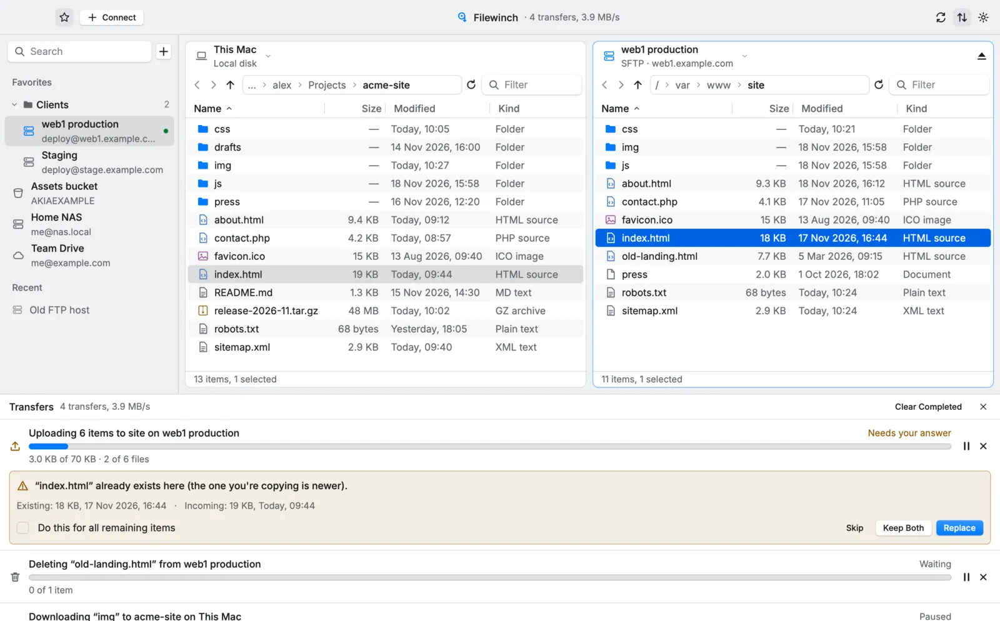
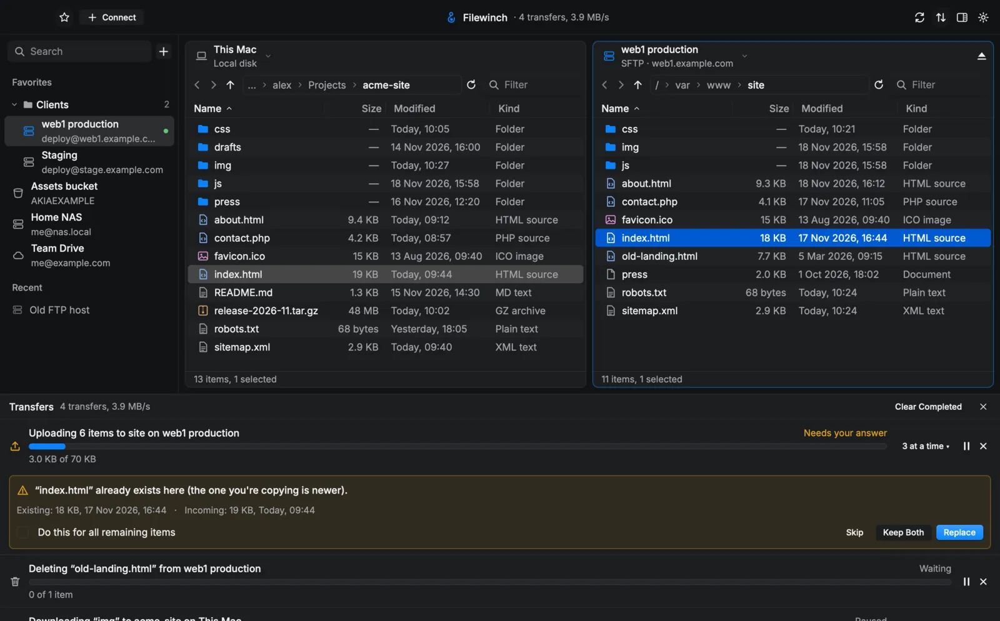
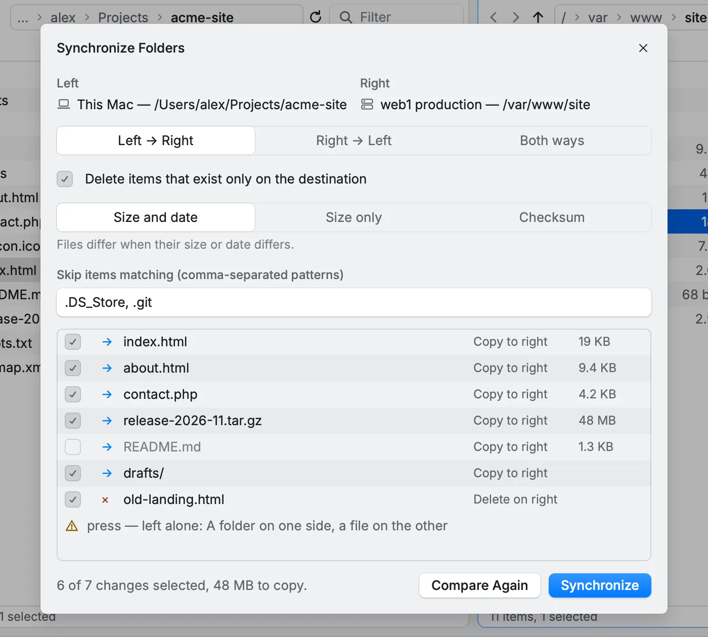
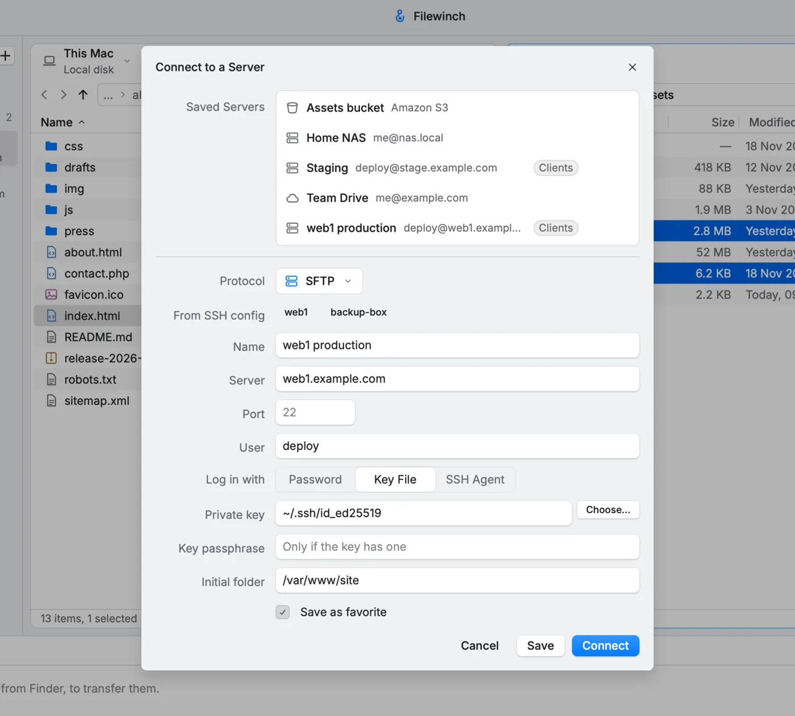
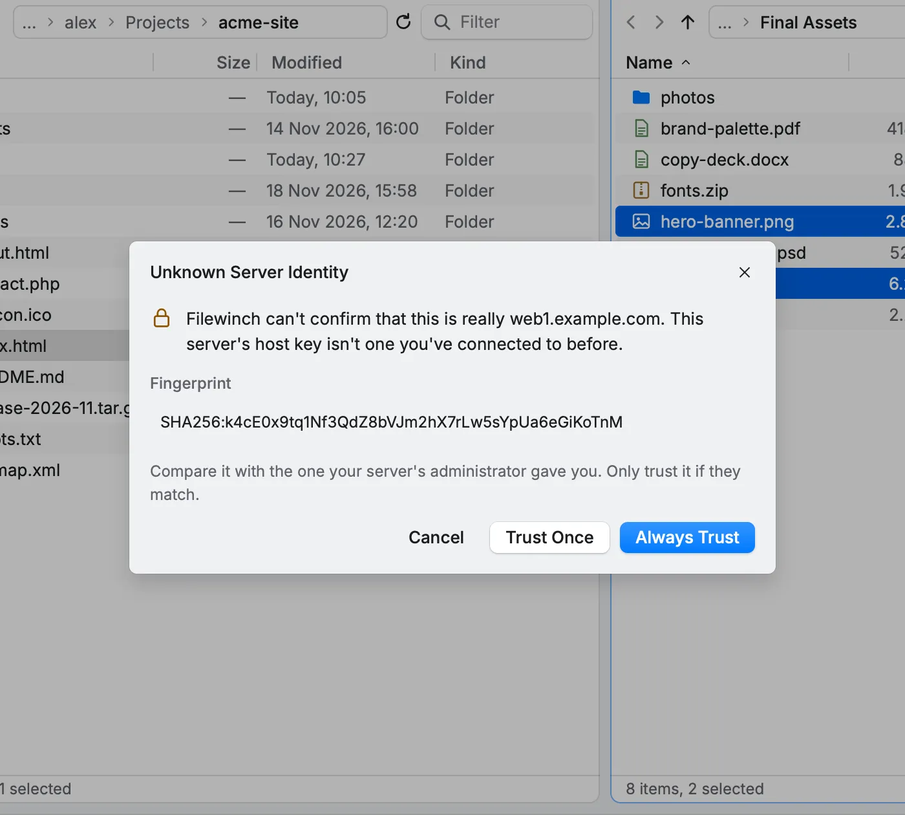
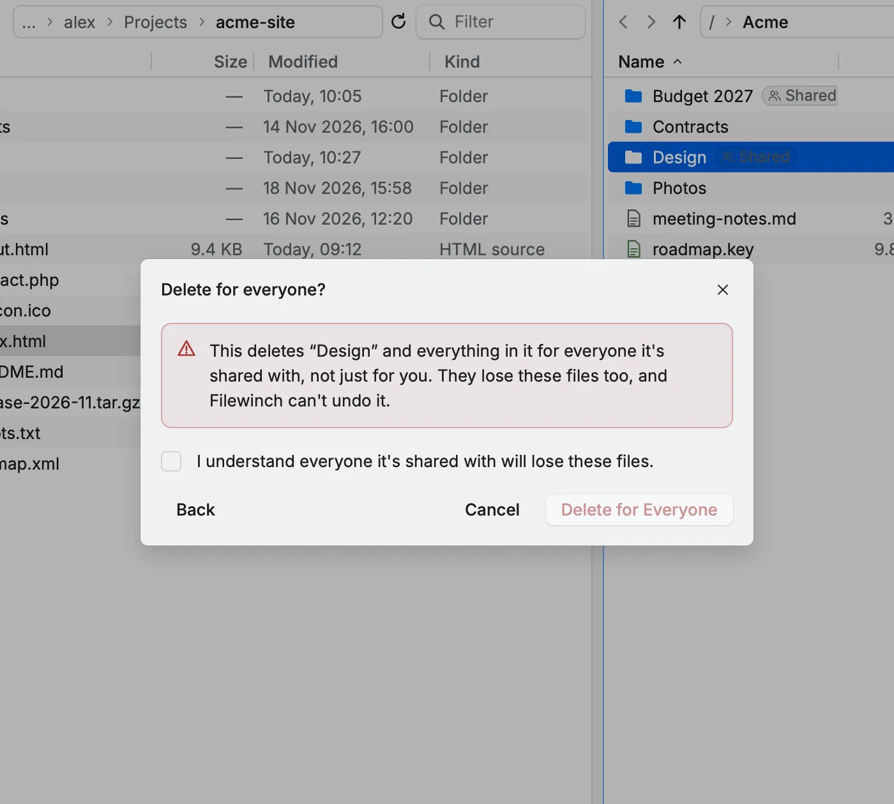
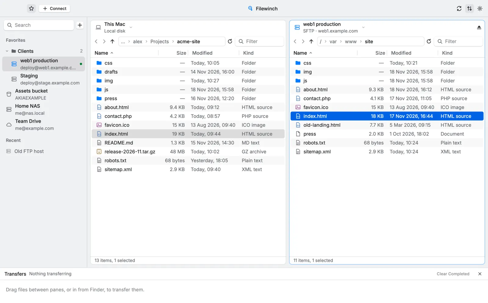
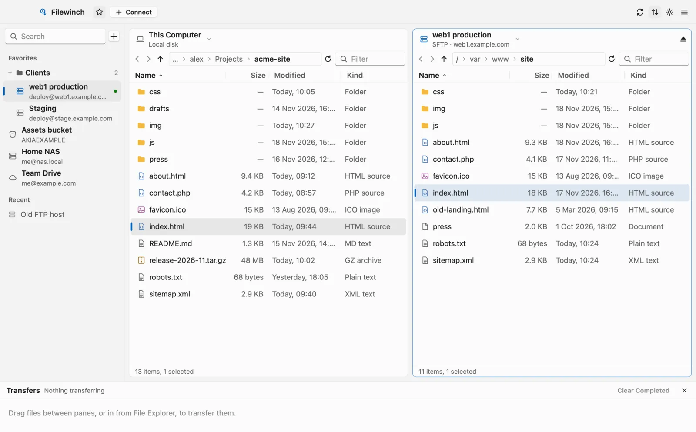
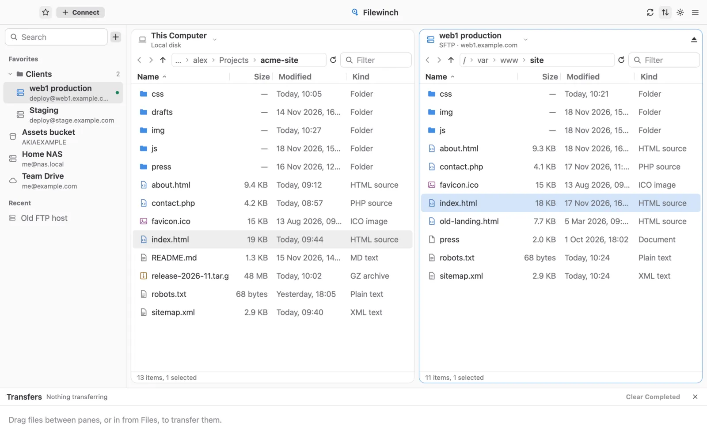

Your servers and clouds, side by side.
Filewinch is a native file-transfer app with a calm, two-pane browser. Connect to SFTP, FTP, WebDAV, Amazon S3 and the big cloud drives, then drag files across, queue large transfers and keep folders in sync.
Free forever, with every feature. An optional US$14 licence supports development and removes a small banner.


The transfer queue stops to ask before it overwrites anything, and lets the rest of the queue carry on.
Everywhere you keep files
Servers, object stores and cloud drives all open in the same two panes, so moving a folder from a NAS to a bucket is one drag.
- SFTPPassword, key files, ssh-agent and your
~/.ssh/config - FTP and FTPSExplicit and implicit TLS, passive or active
- WebDAVOver HTTP or HTTPS, Basic and Digest sign-in
- Amazon S3Buckets as folders, server-side copy
- S3-compatibleCloudflare R2, MinIO, Wasabi, DigitalOcean Spaces
- Backblaze B2Native B2 API, or its S3 endpoint
- Azure Blob StorageAccount key or SAS token
- OpenStack SwiftKeystone v3 and v2, TempAuth
- Google DriveSign in through your browser
- DropboxSign in through your browser
- OneDriveSign in through your browser
- BoxSign in through your browser
Careful with your files
Filewinch shows you what it's about to do, asks when it matters, and recovers on its own when a connection drops.
Folder sync you can read before it runs
Compare two folders, anywhere, and get a plan: what will be copied, which way, and what will be deleted. Untick anything you'd rather leave alone, then synchronize.
- Left to right, right to left, or both ways
- Compare by size and date, size only, or checksum
- Skip patterns such as
.DS_Storeand.git

Connect the way you already do
Filewinch reads your SSH config and keys, talks to your ssh-agent, and keeps passwords in your system's secret store: Keychain on macOS, Credential Manager on Windows, Secret Service on Linux.
- Pick a host straight from
~/.ssh/config - Password, key file or SSH agent
- Save it to Favorites, sorted into folders

Trust is your decision
When a server's host key or certificate is new or has changed, Filewinch stops and shows you its fingerprint. Trust it once, trust it always, or walk away.
- SSH host keys checked against your known hosts
- Self-signed FTPS and HTTPS certificates pinned only with your say-so

Shared folders stay safe
Deleting a shared folder on a cloud drive can wipe it for everyone it's shared with. Filewinch never does that quietly: it explains what will happen and needs you to confirm it first.
- Shared items are marked in the file list
- Emptying a share for everyone needs an explicit tick

The everyday things, done properly
A transfer queue
Pause, resume and cancel any transfer. Big folders start moving while they're still being counted.
Resume and retry
Dropped connections retry on their own and pick up from the bytes already sent, wherever the server allows it.
Bandwidth limits
Cap the speed so a long upload doesn't swamp a video call.
Edit in place
Open a remote file in your own editor. Save, and Filewinch uploads it back.
Drag and drop
Between the two panes, or to and from Finder, File Explorer and your Linux file manager.
Favorites
Save sites into folders, search them, and reopen recent connections in a click.
Secrets stay secret
Passwords, passphrases and sign-in tokens live in your OS secret store, never in plain files.
Light and dark
Follows your system appearance and accent colour, or pick one yourself.
Accessible
Works with VoiceOver, Narrator, NVDA and Orca, and from the keyboard.
At home on every desktop
Built in Rust with the Rune GPU UI framework. No web view, no Electron: Filewinch looks like a Mac app on macOS, follows Windows 11's Fluent style on Windows, and fits GNOME and KDE on Linux.



Free to use. Paid if you'd like to help.
Every feature is in the free download, with no time limit. A one-time licence keeps development going and removes the banner.
Free
US$0 forever
- Every protocol and every feature
- No time limit, no account needed
- A small banner invites you to buy a licence
Supporter licence
US$14 once, plus tax
- Removes the banner
- Funds new protocols, fixes and releases
- Your key arrives by email straight away
Open source, under the GNU AGPL
Read the code, build it yourself, report a bug or send a fix. Filewinch sends no telemetry.
Amazon S3, Cloudflare R2, MinIO, Wasabi, DigitalOcean Spaces, Backblaze B2, Microsoft Azure, OneDrive, OpenStack, Google Drive, Dropbox and Box are trademarks of their owners. Filewinch isn't affiliated with or endorsed by them.